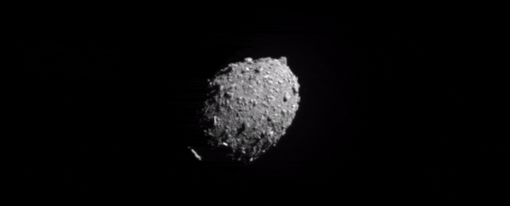

×
Homeüè°
Planetsü™ê
Comets☄️
Galaxiesüåå
Webpage Developer⚙️
Contactüìû
☰ Menu
|||☄ COMET ||| ☄ COMET ||| ☄ COMET ||| ☄ COMET ||| ☄ COMET ||| ☄ COMET ||| ☄ COMET ||| ☄ COMET |||☄ COMET ||| ☄ COMET ||| ☄ COMET ||| ☄ COMET ||| ☄ COMET ||| ☄ COMET ||| ☄ COMET ||| ☄ COMET |||☄ COMET ||| ☄ COMET ||| ☄ COMET ||| ☄ COMET ||| ☄ COMET ||| ☄ COMET ||| ☄ COMET ||| ☄ COMET |||☄ COMET ||| ☄ COMET ||| ☄ COMET ||| ☄ COMET ||| ☄ COMET ||| ☄ COMET ||| ☄ COMET ||| ☄ COMET |||
Press To Read 81P/Wild

Halley's Comet
Comet Hale–Bopp
Comet Encke
Comet Swift–Tuttle
Tempel 1
Comet Shoemaker–Levy 9
67P/Churyumov–Gerasimenko
81P/Wild